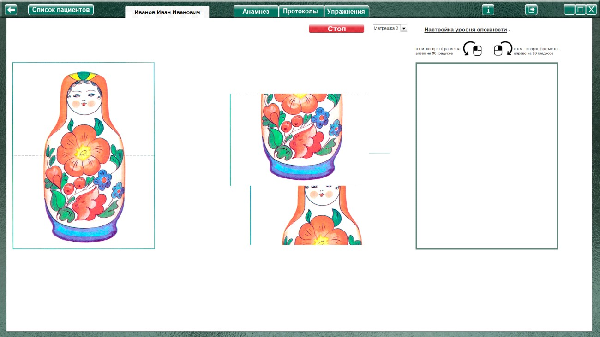
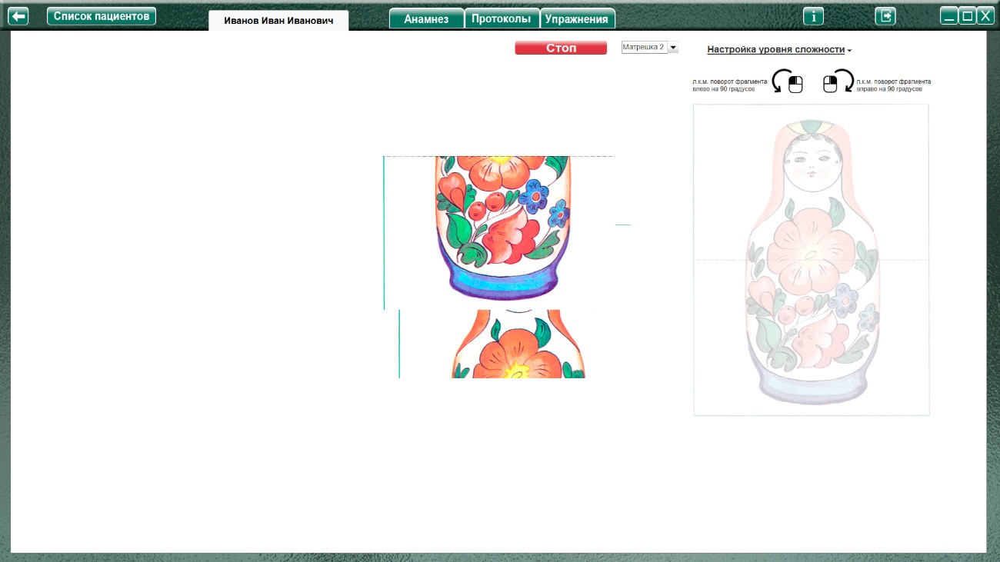
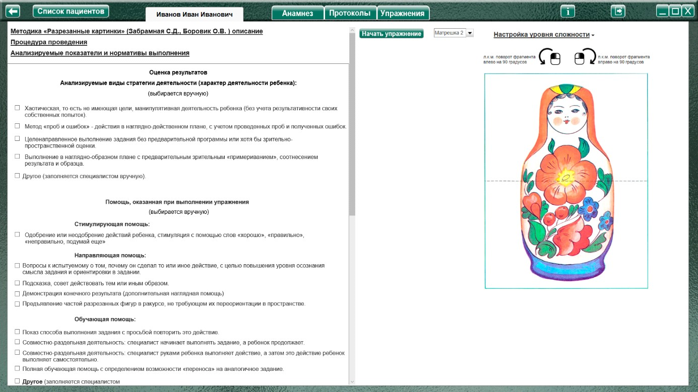
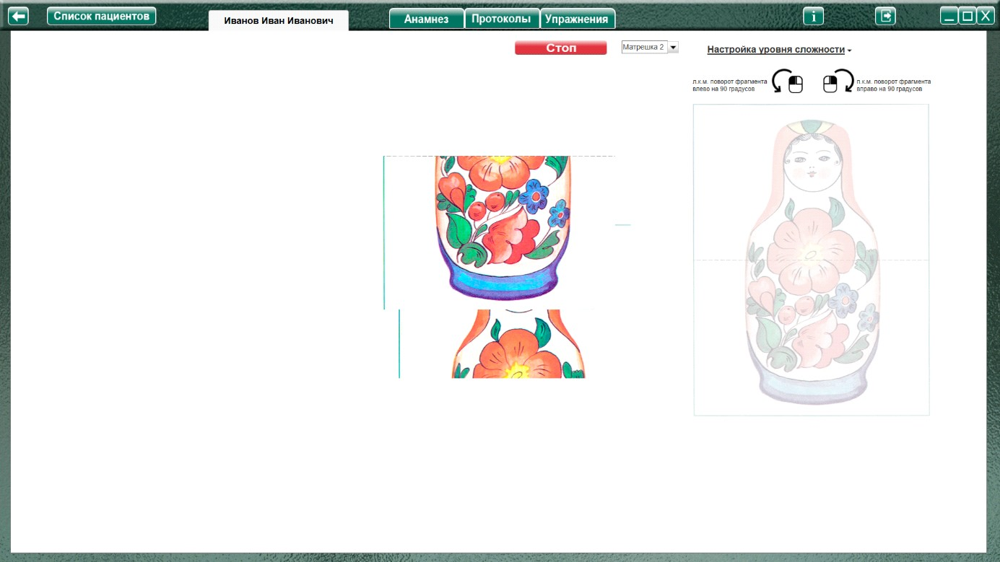

Методика "Разрезанные картинки" (Забрамная С.Д., Боровик О.В.)
Методика "Разрезанные картинки" (Забрамная С.Д., Боровик О.В.) описание
Возраст: 3,5-6 лет. При выраженных вариантах тотального недоразвития возможно использование методики и в более старшем возрасте.
Процедура проведения.
Изображения разрезаны на части по намеченным линиям:
Сначала каждая из картинок предъявляется в сложенном виде, затем ребенок должен ее составить из разделенных фрагментов. Изображения предъявляются поочередно.
Анализируемые показатели и нормативы выполнения
Нарушения пространственных представлений могут наблюдаться у умственно отсталых и интеллектуально полноценных детей. Однако у умственно отсталых они выражены в большей степени. Оказываемая им помощь (показ способа складывания, повторное совместное выполнение
задания) дает сравнительно меньший эффект.
Дети с нормальным умственным развитием выполняют складывание изображения матрешки и игрушечного мишки в 3,5—4 года, леопарда и дома к 4,5—5 годам.
Дети с задержкой психического развития выполняют складывание изображения игрушечного мишки и леопарда к 5—6 годам. Картинка, разрезанная по диагоналям (дом), выполняется при оказании помощи.
Умственно отсталые дети в этом возрасте, как правило, не пытаются получить целое изображение. Они произвольно прикладывают части одну к другой. Картинку, разрезанную по диагоналям, не могут собрать даже при оказании помощи. Наиболее специфичным оказывается складывание картинки с
изображением животного, разрезанной на три части по вертикалям. Часты случаи, когда дети соединяют первую и третью части. Однако на вопрос: «А эту часть куда положить?» дети с нормальным интеллектом сразу же разъединяют первую и третью части и кладут ее на искомое место. Дети умственно отсталые производят беспорядочные действия, кладут вторую часть перед первой, после третьей, сверху, снизу первой и третьей части. Им необходима помощь в виде показа.
Оценка результатов
Характер деятельности ребенка:
Виды возможной помощи:
Стимулирующая помощь
Направляющая помощь:
Обучающая помощь:
Протокол фиксации результатов исследования
_________________________________ _______________
ФИО Дата рождения
Методика |
Разрезанные картинки |
Автор методики (адаптации, модификации) |
Забрамная С.Д., Боровик О.В. |
Цель: |
Выявление уровня сформированности конструктивного и пространственного мышления в наглядно-действенном плане, специфики сформированности пространственных представлений (в частности, способности соотнесения частей и целого и оценки их пространственных взаимоотношений) |
Дата / специалист |
|
Результат: вывод об уровне развития |
|
Примечание |
Процесс выполнения диагностического задания |
|||
Изображение /Кол-во частей и вид разреза |
Факт выполнения/ время. |
Характер деятельности ребенка |
Виды помощи |
Логика заполнения протокола:
Имя специалиста – логин при входе в программу.
Дата – дата и время прохождения упражнения в формате дд.мм.гггг. чч:мм
Изображение – название изображения (кастрюля, пальто, мяч, рукавица)
Кол-во частей и вид разреза:
Факт выполнения - (выполнено / не выполнено)
Время – время, затраченное на прохождения задания.
Ячейки «Характер деятельности ребенка», «Виды помощи» заполняются в зависимости от выбора специалиста в поле «Оценка результатов» либо самостоятельно.
Остальные ячейки заполняются (правятся) специалистом самостоятельно.
Элементы управления настройкой выполнения упражнения
Меню настройки уровня сложности

При нажатии открывает окно, для выбора настроек необходимого уровня сложности

При выборе данного пункта, с начала или во время выполнения упражнения в левой части экрана выводится подсказка «Эталонное изображение»
При выборе данного пункта, в рабочем поле выводится трафарет для сборки картинки

При выборе данного пункта становится «доступным» часть меню для выбора поворота фрагментов, состоящая из пунктов - выпадающих меню:
Фрагментов, повернутых на 90 о (по умолчанию «1»)
Фрагментов, повернутых на 180 о (по умолчанию «1»)
Фрагменты на 90 градусов поворачиваются влево/вправо через один.
Например:
Если выбрано фрагментов, повернутых на 90 градусов 1, то он будет повернут влево.
Если 2 – то один влево, второй вправо.
Если 3 – то 1й влево, 2й вправо, 3й снова влево.
И т.д.
Подсказки для вращения фрагментов
Напоминают (уведомляют), что клик левой кнопкой мыши (л.к.м.) по фрагменту поворачивает выбранный фрагмент на 90 О влево, а клик правой кнопкой мыши (п.к.м.) поворачивает выбранный фрагмент на 90 О вправо.
Выполнение упражнения

Выбрать в меню картинку для выполнения, и нажать кнопку «Начать упражнение» (запуская секундомер, и открывая задание на весь экран)

Выполнить задание согласно пункту «Процедура проведения». Переместить фрагменты на рабочее поле при помощи мышки с зажатой левой кнопкой. Если фрагмент повернут, то клик левой кнопкой мыши (л.к.м.) по фрагменту поворачивает выбранный фрагмент на 90 О влево, а клик правой кнопкой мыши (п.к.м.) поворачивает выбранный фрагмент на 90 О вправо.
По окончании задания нажать кнопку «Стоп», открывая поле оценки результата. При необходимости выбрать характер деятельности, виды помощи, и нажать кнопку «Сформировать протокол». Произвести оценку результата (заполнить оставшиеся ячейки протокола) согласно пункту «Анализируемые показатели и нормативы выполнения».
Только после формирования протокола по выполненному заданию можно приступить к выполнению следующего.